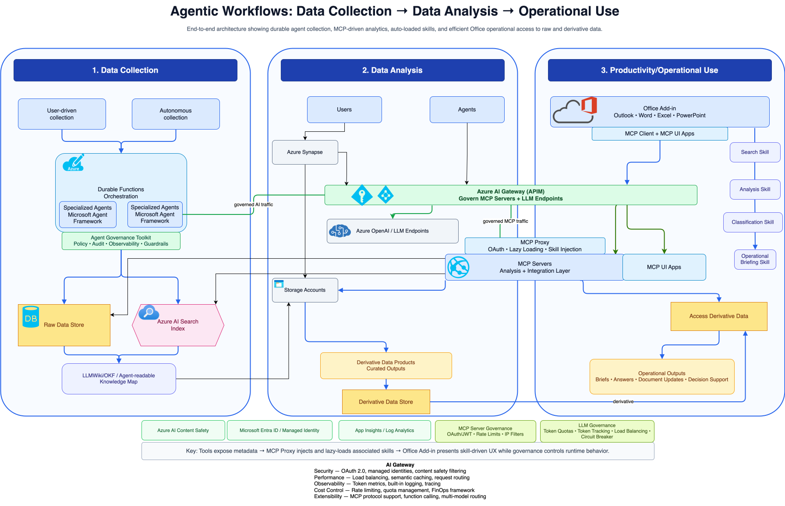

System Architecture

Agentic Workflow Lifecycle
1. Data Collection
Autonomous and user-driven agents ingest raw data from web URLs, documents, and internal sources.
- Source Triage: Classify inputs and route to acquisition tools.
- Acquisition Agents: Web snapshots and document parsing (OCR).
- Grounding: Initial ingestion into Raw Data Stores.
2. Data Analysis
Curated intelligence is generated by specialized agents using the Model Context Protocol (MCP).
- Specialized Skills: Analysis, Classification, and Search agents.
- Derivative Products: Transform raw data into curated insight objects.
- Lazy Loading: Capability injection via MCP Proxy for high efficiency.
3. Operational Use
Intelligence is delivered directly into productivity tools via embedded MCP UI apps.
- Seamless Integration: Surface insights in Outlook, Word, and Excel.
- Direct Access: Connect UI Apps directly to the Derivative Data Store.
- Decision Support: Actionable briefings and automated document updates.
The Control Plane: Azure AI Gateway (APIM)
Unified governance for both LLM endpoints and MCP capability servers.
🛡️ Security & Identity
OAuth 2.0, Entra ID Managed Identities, and AI Content Safety filtering to ensure enterprise compliance.
⚡ Performance
Leveraging semantic caching via Azure Managed Redis for reduced latency and cost, along with intelligent load balancing.
📈 Observability
Real-time token metrics, distributed tracing, and built-in logging via Application Insights.
💰 Cost Control
Detailed quota management, per-tenant rate limiting, and a comprehensive FinOps framework for AI spend.
Enterprise Technical Stack
Official Documentation & Resources
🏗️ Core AI Infrastructure
- Azure AI Foundry - Layered governance for AI workloads
- Azure API Management - Enterprise API gateway controls
🤖 Agentic Patterns
- Durable Functions - State management for long-running agents
- Semantic Caching Guide - Optimizing LLM response latency